One answer is suggested by a physical model for categorical data which likens categorical observations to gas molecules in pressure chambers, and provides a conceptual model for the use of area or observation density to display frequency data. The physical model provides concrete interpretations of a surprising number of results in the analysis of categorical data, from degrees of freedom and likelihood ratios, to iterative proportional fitting and Newton-Raphson iteration.
What has made this contrast puzzling is the fact that the statistical methods for categorical data are in many respects discrete analogs of corresponding methods for quantitative data: log-linear models and logistic regression, for example, are such close parallels of analysis of variance and regression models that they can all be seen as special cases of generalized linear models.
Several possible explanations for this apparent puzzle may be suggested. First, it may just be that those who have worked with and developed methods for categorical data are more comfortable with tabular data, or that frequency tables, representing sums over all cases in a dataset, are more easily apprehended in tables than quantitative data. Second, it may be argued that graphical methods for quantitative data are easily generalized so, for example, the scatterplot for two variables provides the basis for visualizing any number of variables in a scatterplot matrix; available graphical methods for categorical data tend to be more specialized. However, a more fundamental reason may be, as I will try to show here, that quantitative data display relies on e well-known natural visual mapping in which a magnitude is depicted by length or position along a scale; for categorical data, it will be seen that a count is more naturally displayed by an area or by the visual density of an area.
Table 1 shows data on the relation between hair color and eye color among 592 subjects (students in a statistics course) collected by Snee (1974). The Pearson c2 for these data is 138.3 with nine degrees of freedom, indicating substantial departure from independence. The question is how to understand the nature of the association between hair and eye color.
| Hair Color | |||||
|---|---|---|---|---|---|
|
Eye Color | BLACK | BROWN | RED | BLOND | Total |
| Green | 5 | 29 | 14 | 16 | 64 |
| Hazel | 15 | 54 | 14 | 10 | 93 |
| Blue | 20 | 84 | 17 | 94 | 215 |
| Brown | 68 | 119 | 26 | 7 | 220 |
| Total | 108 | 286 | 71 | 127 | 592 |
For any two-way table, the expected frequencies under independence can be represented by rectangles whose widths are proportional to the total frequency in each column, n+j, and whose heights are proportional to the total frequency in each row, ni+; the area of each rectangle is then proportional to mij. Figure 1 shows the expected frequencies for the hair and eye color data.
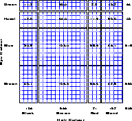 |
Figure 1 Expected frequencies under independence. Each box has area equal to its expected frequency, and is cross-ruled proportionally to the expected frequency. |
Riedwyl and Schüpbach (1983, 1994) proposed a sieve diagram (later called a parquet diagram) based on this principle. In this display the area of each rectangle is proportional to the expected frequency and the observed frequency is shown by the number of squares in each rectangle. Hence, the difference between observed and expected frequencies appears as the density of shading, using color to indicate whether the deviation from independence is positive or negative. (In monochrome versions, positive residuals are shown by solid lines, negative by broken lines.) The sieve diagram for hair color and eye color is shown in Figure 2.
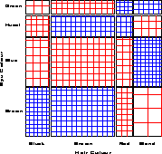 |
Figure 2 Sieve diagram for hair-color, eye-color data. Observed frequencies are equal to the number squares in each cell, so departure from independence appears as variations in shading density. |
The mosaic display, proposed by Hartigan & Kleiner (1981) and extended by Friendly (1994a), represents the counts in a contingency table directly by tiles whose area is proportional to the cell frequency. This display generalizes readily to n-way tables and can be used to display the residuals from various log-linear models.
One form of this plot, called the condensed mosaic display, is similar to a divided bar chart. The width of each column of tiles in Figure 3 is proportional to the marginal frequency of hair colors; the height of each tile is determined by the conditional probabilities of eye color in each column. Again, the area of each box is proportional to the cell frequency, and complete independence is shown when the tiles in each row all have the same height.
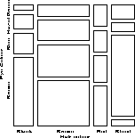 |
Figure 3 Condensed mosaic for Hair-color, Eye-color data. Each column is divided according to the conditional frequency of eye color given hair color. The area of each rectangle is proportional to observed frequency in that cell. |
Figure 4 gives the extended the mosaic plot, showing the standardized (Pearson) residual from independence, dij = (nij - mij) / Ö{ mij } by the color and shading of each rectangle: cells with positive residuals are outlined with solid lines and filled with slanted lines; negative residuals are outlined with broken lines and filled with grayscale. The absolute value of the residual is portrayed by shading density: cells with absolute values less than 2 are empty; cells with | dij | ³ 2 are filled; those with | dij | ³ 4 are filled with a darker pattern.1 Under the assumption of independence, these values roughly correspond to two-tailed probabilities p < .05 and p < .0001 that a given value of | dij | exceeds 2 or 4. For exploratory purposes, we do not usually make adjustments (e.g., Bonferroni) for multiple tests because the goal is to display the pattern of residuals in the table as a whole. However, the number and values of these cutoffs can be easily set by the user.
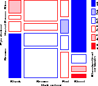 |
Figure 4 Enhanced mosaic, reordered and shaded. Deviations from independence are shown by color and shading. The two levels of shading density correspond to standardized deviations greater than 2 and 4 in absolute value. This form of the display generalizes readily to multi-way tables. |
When the row or column variables are unordered, we are also free to rearrange the corresponding categories in the plot to help show the nature of association. For example, in Figure 4, the eye color categories have been permuted so that the residuals from independence have an opposite-corner pattern, with positive values running from bottom-left to top-right corners, negative values along the opposite diagonal. Coupled with size and shading of the tiles, the excess in the black-brown and blond-blue cells, together with the underrepresentation of brown-eyed blonds and people with black hair and blue eyes is now quite apparent. Alhough the table was reordered on the basis of the dij values, both dimensions in Figure 4 are ordered from dark to light, suggesting an explanation for the association. (In this example the eye-color categories could be reordered by inspection. A general method (Friendly, 1994a) uses category scores on the largest correspondence analysis dimension.)
| (1) |
| (2) |
For example, with the data from Table 1 broken down by sex, fitting the model [HairEye][Sex] allows us to see the extent to which the joint distribution of hair-color and eye-color is associated with sex. For this model, the likelihood-ratio G2 is 19.86 on 15 df (p = .178), indicating an acceptable overall fit. The three-way mosaic, shown in Figure 5, highlights two cells: among blue-eyed blonds, there are more females (and fewer males) than would be the case if hair color and eye color were jointly independent of sex. Except for these cells hair color and eye color appear unassociated with sex.
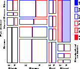 |
Figure 5 Three-way mosaic display for hair color, eye color, and sex. . Residuals from the model of joint independence, [HE] [S] are shown by shading. G2 = 19.86 on 15 df. The only lack of fit is an overabundance of females among blue-eyed blonds. |
A third graphical method based on the use of area as the visual mapping of cell frequency is the ``fourfold display'' (Friendly, 1994b, 1994c) designed for the display of 2 ×2 (or 2×2 ×k) tables. In this display the frequency nij in each cell of a fourfold table is shown by a quarter circle, whose radius is proportional to Ö{ nij }, so the area is proportional to the cell count.
For a single 2 ×2 table the fourfold display described here also shows the frequencies by area, but scaled in a way that depicts the sample odds ratio, q = (n11 / n12 )¸(n21 / n22 ). An association between the variables (q ¹ 1) is shown by the tendency of diagonally opposite cells in one direction to differ in size from those in the opposite direction, and the display uses color or shading to show this direction. Confidence rings for the observed q allow a visual test of the hypothesis H0 : q = 1. They have the property that the rings for adjacent quadrants overlap iff the observed counts are consistent with the null hypothesis.
As an example, Figure 6 shows aggregate data on applicants to graduate school at Berkeley for the six largest departments in 1973 classified by admission and sex. At issue is whether the data show evidence of sex bias in admission practices (Bickel et al., 1975). The figure shows the cell frequencies numerically in the corners of the display. Thus there were 2691 male applicants, of whom 1193 (44.4%) were admitted, compared with 1855 female applicants of whom 557 (30.0%) were admitted. Hence the sample odds ratio, Odds (Admit|Male) / (Admit|Female) is 1.84 indicating that males were almost twice as likely to be admitted.
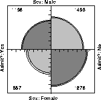 |
Figure 6 Four-fold display for Berkeley admissions: Evidence for sex bias? The area of each shaded quadrant shows the frequency, standardized to equate the margins for sex and admission. Circular arcs show the limits of a 99% confidence interval for the odds ratio. |
The frequencies displayed graphically by shaded quadrants in Figure 6 are not the raw frequencies. Instead, the frequencies have been standardized (by iterative proportional fitting) so that all table margins are equal, while preserving the odds ratio. Each quarter circle is then drawn to have an area proportional to this standardized cell frequency. This makes it easier to see the association between admission and sex without being influenced by the overall admission rate or the differential tendency of males and females to apply. With this standardization the four quadrants will align when the odds ratio is 1, regardless of the marginal frequencies.
The shaded quadrants in Figure 6 do not align and the 99% confidence rings around each quadrant do not overlap, indicating that the odds ratio differs significantly from 1. The width of the confidence rings gives a visual indication of the precision of the data.
For example, the admissions data shown in Figure 6 were obtained from a sample of six departments; Figure 7 displays the data for each department. The departments are labeled so that the overall acceptance rate is highest for Department A and decreases steadily to Department F. Again, each panel is standardized to equate the marginals for sex and admission. This standardization also equates for the differential total applicants across departments, facilitating visual comparison.
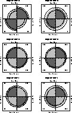 |
Figure 7 Fourfold display of Berkeley admissions, by department. In each panel the confidence rings for adjacent quadrants overlap if the odds ratio for admission and sex does not differ significantly from 1. The data in each panel have been standardized as in Figure 6. |
Figure 7 shows that, for five of the six departments, the odds of admission is approximately the same for both men and women applicants. Department A appears to differs from the others, with women approximately 2.86 ( = ( 313/19 ) /(512/89)) times as likely to gain admission. This appearance is confirmed by the confidence rings, which in Figure 7 are joint 99% intervals for qc , c = 1, ¼, k.
This result, which contradicts the display for the aggregate data in Figure 6, is a nice example of Simpson's paradox. The resolution of this contradiction can be found in the large differences in admission rates among departments. Men and women apply to different departments differentially, and in these data women apply in larger numbers to departments that have a low acceptance rate. The aggregate results are misleading because they falsely assume men and women are equally likely to apply in each field. (This explanation ignores the possibility of structural bias against women, e.g., lack of resources allocated to departments that attract women applicants.)
Closely associated with the idea of a visual metaphor is a conceptual model that helps you interpret what is shown in a graph. A good conceptual model for a graphical display will have deeper connections with underlying statistical ideas as well. In this section I will describe conceptual models for both quantitative and frequency data that have these properties and help to elucidate the differences between their graphical displays. The discussion borrows from Sall (1991a, 1991b), Farebrother (1987) and Friendly (1995).
The simplest conceptual model for quantitative data is the balance beam, often used in introductory statistics texts to illustrate the sample mean as the point along an axis where the positive and negative deviations balance.
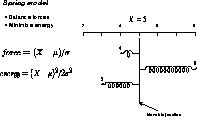 |
Figure 8 Spring model for least squares estimation. Each observation exerts a force on the movable junciton. The system balances where the potential energy of the system is minimized. |
The spring model is more powerful because it provides a basis for understanding a wide class of both graphical displays and statistical principles for quantitative data. For example, least squares regression can be represented as shown in Figure 9, where the points are again fixed and attached to a movable rod by unit length, equally stiff springs. If the springs are constrained to be kept vertical, the rod, when released, moves to the position of balance and minimum potential energy, the least square solution. The normal equations,
| (3) |
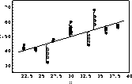 |
Figure 9 Spring model for least squares regression. Fixed data points are connected to a movable rod by springs constrained to remain vertical. The least squares line is the position of balanced forces. |
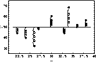 |
Figure 10 Testing a hypothesis by springs. The regression sum of squares for testing H0 : b = 0 measures the additional energy required to force the rod to be horizontal. |
For categorical data, we need a visual analog for the sample frequency in k mutually exclusive and exhaustive categories. Consider first the one-way marginal frequencies of hair color from Table 1.
The simplest physical model represents the hair color categories by urns containing marbles representing the observations (Figure 11). This model is sometimes used in texts to describe multinomial sampling, and provides a visual representation that equates the count ni with the area filled in each urn, as in the familiar bar chart. (When the urns are of equal width, count is also reflected by height, but in the general case, count is proportional to area.) However, the urn model is a static one and provides no further insights. It does not relate to the concept of likelihood or to the constraint that the probabilities sum to 1.
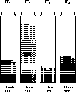 |
Figure 11 Urn model for multinomial sampling. Each observation in Table 1 is represented by a token classified by hair color into the appropriate urn. This model provides a basis for the bar chart, but does not yield any further insights. |
The work done on the gas (or potential energy imparted to it) by compressing a small distance dy is the force on the piston times dy, which equals the pressure times the change in volume. Hence, the potential energy of a gas at height=p is òp1 ( 1 / y ) d y, which is - log( p ), so the energy in this model corresponds to negative log likelihood.
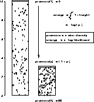 |
Figure 12 Pressure model for categorical data. Frequency of observations corresponds to pressure of gas in a chamber, shown visually as observation density; negative log likelihood corresponds to the energy required to compress the gas to a height p. |
|
As with the spring model, setting derivatives to zero means minimizing the potential energy; the maximum likelihood solution simply sets parameter values equal to corresponding sample quantities, where the forces are also balanced.
In the mechanical model (Figure 13) this corresponds to stacking the gas containers with movable partitions between them, with one end of the bottom and top containers fixed at 0 and 1. The observations exert pressure on the partitions, the likelihood equations are precisely the conditions for the forces to balance, and the partitions move so that each chamber is of size pi = ni / n. Each chamber has potential energy of -log pi, and the total energy, - åic ni log pi is minimized. The constrained top and bottom force the probability estimates to sum to 1, and the number of movable partitions is literally and statistically the degrees of freedom of the system.
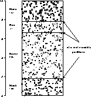 |
Figure 13 Fitting probabilities for a one-way table. The movable partitions naturally adjust to positions of balanced forces, which is the minimum energy configuration. |
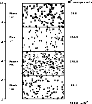 |
Figure 14 Testing a hypothesis. The likelihood ratio G2 measures how much energy is required to move the partitions to constrain the data to the hypothesized probabilities. The components of G2 indicate the degree to which each chamber has low or high pressure, relative to the balanced state. |
The pressure model also provides simple explanations of other results. For example, increased sample size increases power, because more observations means more pressure in each compartment, so it takes more energy to move the partitions and the test is sensitive to smaller differences between observed and hypothesized probabilities.
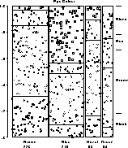 |
Figure 15 Two-way tables. For multiple samples, the model represents each sample by a stack of pressure chambers whose width is proportional to the marginal frequencies of one variable. |
For a three-way table, the physical model is a cube with its third dimension partitioned according to conditional frequencies of the third variable, given the first two. If the third dimension is represented instead by partitioning a two-dimensional graph, the result is the mosaic display.
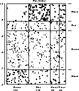 |
Figure 16 Testing independence. The chambers are forced to align with both sets of marginal frequencies, and the likelihood ratio G2 again measures the additional energy required. |
Each log-linear model for three-way tables can be interpreted analogously. For example, the log-linear model [A] [B] [C] (complete independence), corresponds to the cube in which all chambers are forced to conform to the one way marginals, p ijk = p i++ p +j+ p ++k for all i , j , k. G2 is again the total additional energy required to move the partitions from their positions in the saturated model in which the volume of each cell is pijk = nijk / n (so the pressures balance), to the positions where each cell is a cube of size pi++ ×p+j+ ×p ++k. Other models have a similar representation in the pressure model.
When direct estimates do not exist, the MLEs can be estimated by iterative proportional fitting (IPF). This process simply matches the partitions corresponding to each of the sufficient marginals of the fitted frequencies to the same marginals of the data. For example, for the log-linear model [A B] [B C] [A C], the sufficient statistics are nij+ , ni+k , and n+jk. The conditions that the fitted margins must equal these observed margins are
| (3) |
| (4) |
The iterative process can be shown visually (Friendly, 1995), in a way that is graphically exact, by drawing chambers whose area is proportional to the fitted frequencies, [^m]ijk, and which are filled with a number of points equal to the observed nijk. Such a figure will then show equal densities of points in cells that are fit well, but relatively high or low densities where nijk > [^m]ijk or nijk < [^m]ijk, respectively. The IPF algorithm can in fact be animated, by drawing one such frame for each step in the iterative process. When this is done, it is remarkable how quickly IPF converges, at least for small tables.
Likewise, numerical methods for minimizing the negative log likelihood directly can also be interpreted in terms of the dynamic model (Farebrother, 1988; Friendly, 1995). For example, in steepest descent and Newton-Raphson iteration, the update step changes the estimated model parameters b (t+1) in proportion to the score vector f(t) of derivatives of the likelihood function, f(t) = ¶logL / ¶b = X ' ( n -m(t) ) to give b (t+1) = b (t)+ l f(t). But f(t) is just the vector of forces in the mechanical model attributed to the differences between n and m(t) as a function of the model parameters.
In the second part of this paper I have outlined concrete, physical models for both quantitative and categorical data and their graphic representation and have shown these to yield a wide range of interpretation for statistical principles and phenomena. Although the spring and pressure models differ fundamentally in their mechanics, both can be understood in terms of balancing of forces and the minimization of energy. The recognition of these conceptual models can make a graphical display a tool for thinking, as well as a tool for data summarization and exposure.
Finally, as I look to the future development of graphical methods for categorical data, I see two areas where our report card, perhaps reflected in this volume, may be marked ``needs improvement'': First, much of the power of graphical methods for quantitative data stems from the availability of tools that generalize readily to multivariable data and can make important contributions to model building, model criticism, and model interpretation. The mosaic display possesses some of these properties, and other papers here attest to the widespread utility of biplots and correspondence analysis. However, I believe there is need for further development of such methods, particularly as tools for constructing models and communicating their import.
Second, I am reminded of the statement (Tukey, 1959, attributed to Churchill Eisenhart) that the practical power of any statistical tool is the product of its statistical power times its probability of use. It follows that statistical and graphical methods are of practical value to the extent that they are implemented in standard software, available, and easy to use. Statistical methods for categorical data analysis have nearly reached that point. Graphical methods still have some way to go.
(1) Color versions use blue and red at varying lightness to portray both sign and magnitude of residuals.